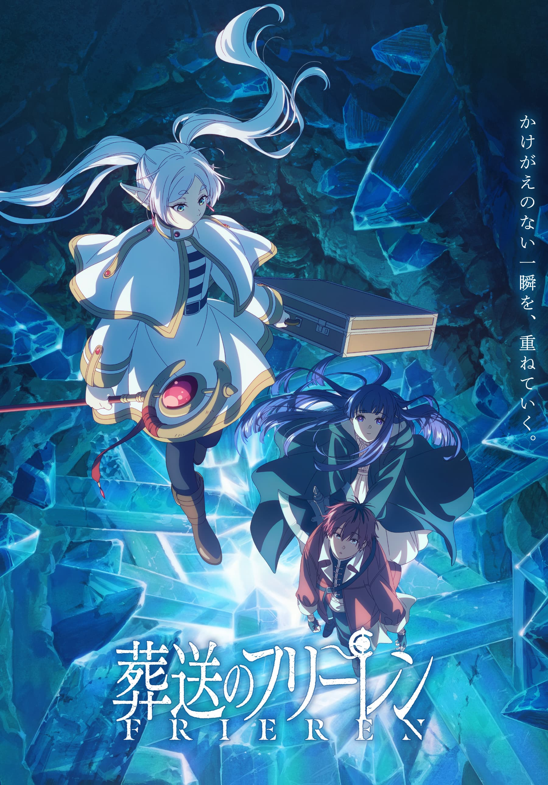
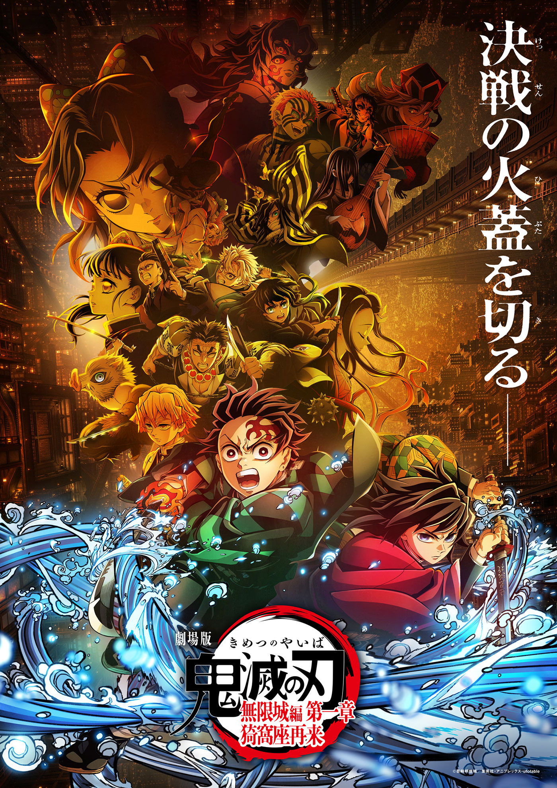

好きなアニメ
- 主な登場キャラ:
・ ナツキ・スバル cv:小林裕介
・ エミリア cv:高橋李依
・ レム cv:水瀬いのり ←推し
・ ラム cv:村川梨衣
・ ベアトリス cv:新井里美 - 4thseason: 2026年4月から放送開始
- 主な登場キャラ:
・ フリーレン cv:種﨑敦美
・ フェルン cv:市ノ瀬加那
・ シュタルク cv:小林千晃
・ ヒンメル cv:岡本信彦 - 2期： 放送中！！
- 主な登場キャラ:
・ 虎杖悠仁 cv:榎木淳弥
・ 伏黒恵 cv:内田雄馬
・ 釘崎野薔薇 cv:瀬戸麻沙美
・ 五条悟 cv:中村悠一
・ 夏油傑 cv:櫻井孝宏
・ 乙骨憂太 cv:緒方恵美
- 2025年9月より呪術廻戦≡（モジュロ）本編の70年後？！が連載中
- 主な登場キャラ:
・ 竈門炭治郎 cv:花江夏樹
・ 竈門禰豆子 cv:鬼頭明里
・ 我妻善逸 cv:下野 紘
・ 嘴平伊之助 cv:松岡禎丞
・ 冨岡義勇 cv:櫻井孝宏
・ 鱗滝左近次 cv:大塚芳忠
- 劇場版「鬼滅の刃」無限城編 第一章 猗窩座再来 公開中！！
Re:ゼロから始める異世界生活
コンビニからの帰り道、突如として異世界へと召喚されてしまった少年・ナツキ スバル。
頼れるものなど何一つない異世界で、無力な少年が手にした唯一の力……それは死して時間を巻き戻す《死に戻り》の力だった。
大切な人たちを守るため、そして確かにあったかけがえのない時間を取り戻すため、少年は絶望に抗い、過酷な運命に立ち向かっていく。
葬送のフリーレン

魔王を倒し王都へ凱旋した勇者ヒンメル一行。各々が冒険した10年を振り返りながらこれからの人生に想いを馳せる中、エルフのフリーレンは感慨にふけることもなく、また魔法探求へと旅立っていく。50年後、皆との約束のためフリーレンは再び王都へ。その再会をきっかけに、彼女は新たな旅へと向かうことに―。
呪術廻戦
主人公・虎杖悠仁を中心に呪いと戦う呪術師たちの姿が描かれる物語です。
その舞台は現代の日本。 呪術師たちが戦う（祓う）のは人間の負の感情が流れ出ることで生まれる化け物・呪霊（じゅれい）。
鬼滅の刃

大正時代を舞台に、鬼に家族を殺され妹を鬼にされた少年・竈門炭治郎が、妹を人間に戻し家族の仇を討つため、鬼殺隊として鬼と戦う血風剣戟冒険譚。
心優しい炭治郎が、善逸・伊之助ら仲間や「柱」と共に、悲しい過去を持つ鬼たちと戦う友情と努力の物語。